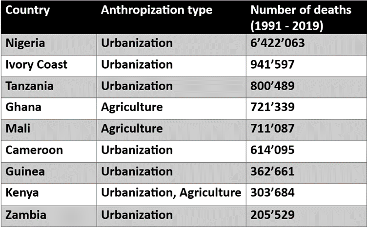

Introduction
Our project focuses on analyzing malaria-related fatalities within African countries. Our decision to focus only on Africa stemmed from observing the global data, which highlighted Africa as the continent most significantly affected by malaria fatalities. Malaria remains a persistent issue in Africa, evident from the forthcoming visualizations that show the alarming number of deaths. It stands as one of the primary causes of death in Africa.
Our analysis covers data from 1991 to 2019, allowing us to trace the growing trend of fatalities over these years. Additionally, we aim to go into the factors contributing to this problem, particularly examining human activities that have affected mosquito populations. Now, let's explore the visualizations to gain an understanding of this issue.
Maps of malaria deaths in Africa
You can explore the malaria situation in Africa through three different maps. Each button reveals a unique perspective on how malaria impacts the continent. Select a button to see the various maps.
The first map illustrates malaria death rates in African countries over 30 years, displaying the proportion of deaths relative to the population in each country.
Trend of Malaria Deaths in African Countries (1991-2019)
Illustrating the yearly malaria-related deaths in 10 African countries from 1991 to 2019.
The bar chart above depicts the growing trend of malaria-induced deaths in each country
between 1990 and 2019. Nigeria consistently stands out with the highest annual death toll,
followed by the Democratic Republic of the Congo (DRC).
While the rankings of other countries change, their numbers remain notably lower
compared to Nigeria. It is important to note that this graph doesn't consider population
size when showcasing these death counts.
Trend of Total Deaths per Year Divided in Age Groups
The visualization shows the trend of total malaria deaths in Africa for different age groups.
The area chart shows the age groups most impacted by malaria-related deaths over the years. It indicates that the highest number of deaths occurs among children under 5 years old, likely due to their weaker immune systems. Following this group are individuals aged 15 to 49, and then those aged 50 to 69. This trend might be attributed to the increased outdoor activities among these age brackets, posing a higher risk of mosquito bites. The least affected age groups are the ones with individuals of 5 to 14 and those above 70.
The graph highlights that children under 5 years old face the greatest risk of mortality from malaria.
Anthropization

From our analysis correlating antropization factors such as agriculture and urbanization with mosquito populations, the table reveals different countries experiencing negative effects due to these factors. Several countries are affected negatively, implying that their agricultural and urban development practices contribute to increased mosquito populations.
The impact is linked to the destruction of wetlands, which serve as natural habitats for mosquitoes. As agriculture and urbanization destroy these areas, mosquitoes are forced to relocate to urban settings, relying on human blood as their primary source of sustenance rather than animals. This chanage in habitat resaults in increased mosquito presence and associated risks within urban environments.
By comparing the countries affected by agriculture and urbanization with their respective death rates displayed on the death rate map, we can see there is a clear correlation. Most of the countries affected by urbanization and agriculture are the same ones with the highest death rates. This observation shows the significant impact of humans on mosquitoes.
Conclusion
Our analysis shows the impact of malaria across numerous African countries, particularly those in the central region of the continent. Over a span of 30 years, malaria has caused approximately 6 million deaths in Africa. This disease is an issue in Africa, mostly affecting children under 5 years old and adults who spend most of their time outdoors.
While Nigeria is the country with the highest total number of malaria-related deaths, Sierra Leone stands out for the highest death toll relative to its population size. Additionally, countries with higher death rates often are the ones with increased urbanization and agricultural development.
This analysis is useful for individuals seeking insights into the effects of malaria in Africa. Moreover, it provides an understanding for developing strategies to address and mitigate this issue.